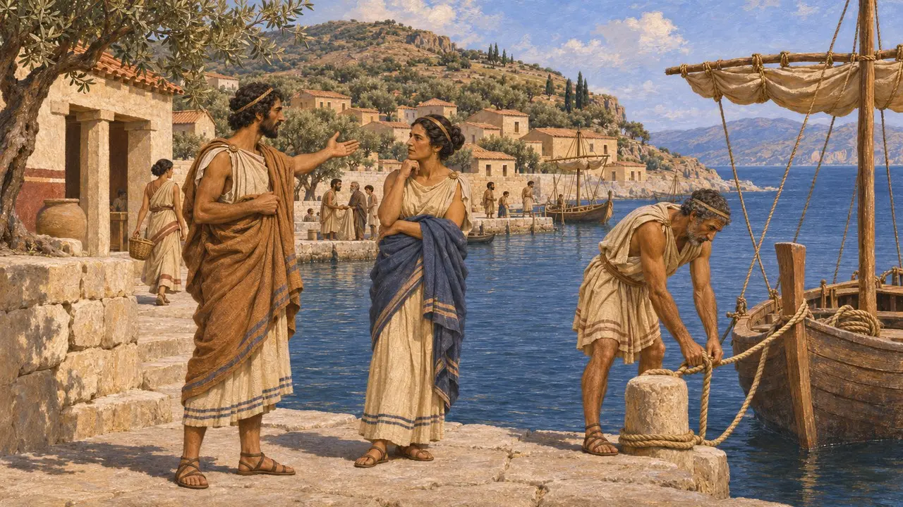
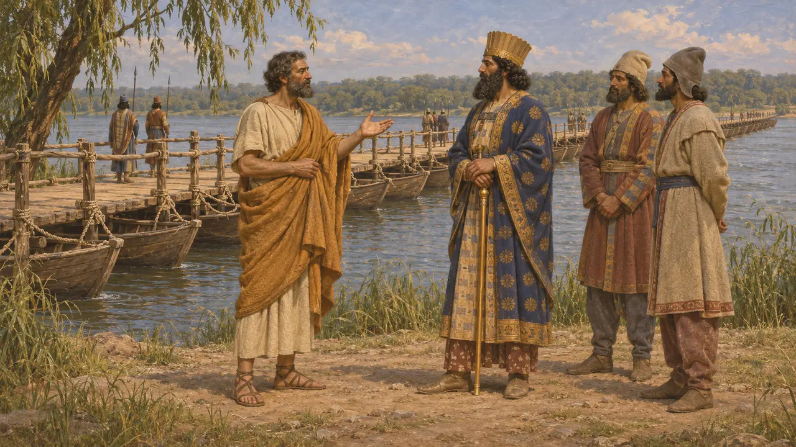
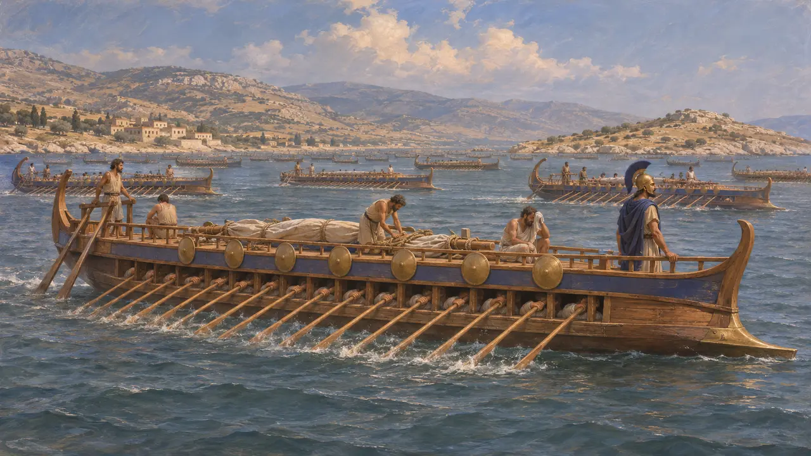
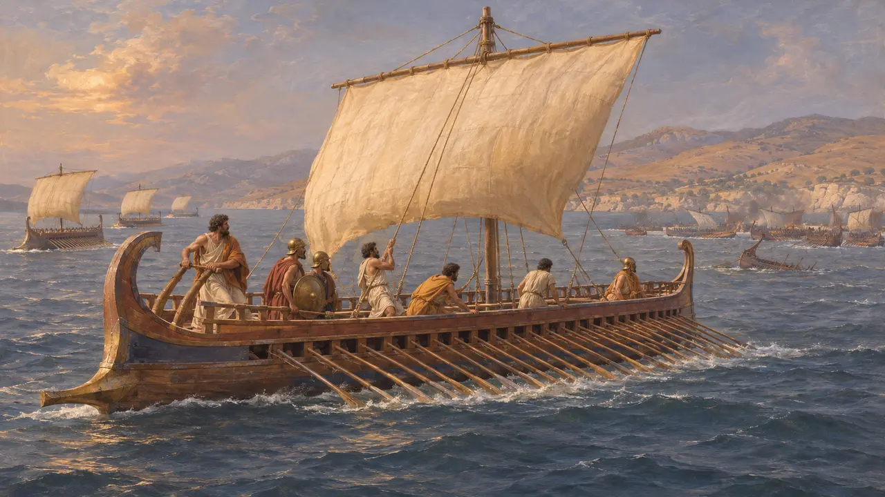
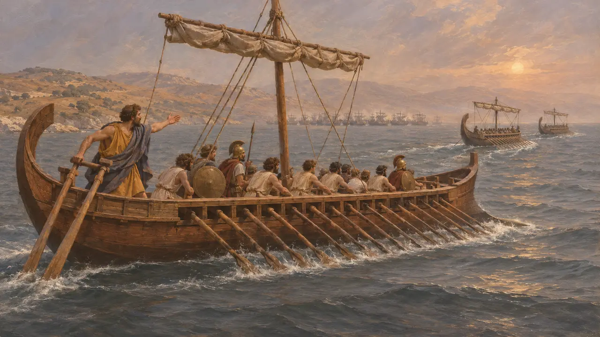
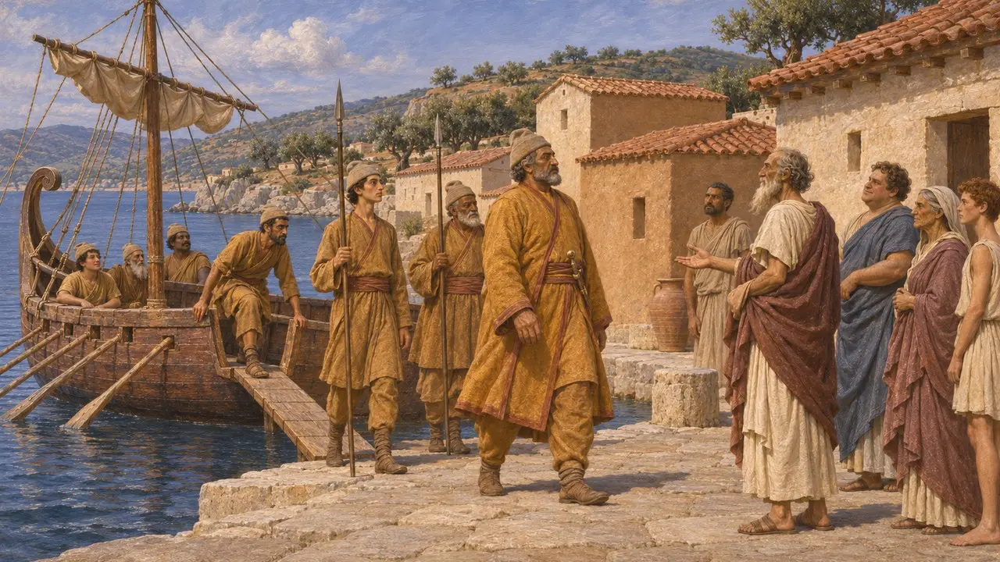

I Lesbi
Isolani greci di Lesbo, con città come Mitilene, nella rivolta ionica, 494 a.C.
Nel gioco: Livello 7: Sardi brucia
I Lesbi erano gli abitanti greci di Lesbo, un'isola al largo della costa dell'Asia Minore con città come Mitilene e Metimna. La loro isola rientrava nella sfera persiana dopo la conquista dell'Asia Minore occidentale. Sono noti soprattutto per la battaglia navale di Lade nel 494 a.C., dove, secondo Erodoto, seguirono i Sami e lasciarono la linea.
Nel gioco: Il gioco nomina i Lesbi nella Cronaca, nei decreti o nelle note di campagna su Lade, dove la maggior parte dei Sami se ne va e i Lesbi li seguono. Non hanno una meccanica propria oltre a ciò che mostrano quei testi.

Un'isola di Greci eoli
Racconto anticoErodoto conta Lesbo tra le comunità greche eoliche dell'Egeo orientale. Dice che gli isolani non subirono la stessa pressione degli Ioni del continente dopo che Arpago, il generale di Ciro, ebbe preso le città della costa. Come e quando Lesbo stessa passò sotto l'autorità persiana, qui non lo espone con chiarezza.
Herodotus 1.151-152

Coe di Mitilene all'Istro
Racconto anticoErodoto dice che Coe di Mitilene, un comandante della spedizione scitica di Dario, prese la parola al ponte sull'Istro e in seguito ricevette dal Re la tirannide della sua città. È il resoconto di uno scrittore greco su una pratica persiana: sostenere signori locali amici nelle città greche della costa.
Herodotus 4.97 and 5.11

Navi lesbie a Lade
Racconto anticoErodoto dice che i Lesbi portarono settanta navi alla flotta ionica a Lade nel 494 a.C. Attribuisce alla flotta persiana seicento navi, con equipaggi fenici, ciprioti, cilici ed egiziani, una cifra forse gonfiata. Dice anche che gli Ioni si stancarono del duro addestramento di Dionisio di Focea.
Herodotus 6.8-12

La fuga a Lade
Racconto anticoErodoto dice che, quando le flotte si scontrarono, la maggior parte delle navi samie alzò le vele e se ne andò, e i Lesbi, vedendole partire, fecero lo stesso. I Chioti continuarono a combattere, sfondarono più volte la linea nemica e persero la maggior parte delle loro navi. Mileto fu poi presa con l'assedio e le gallerie di mina.
Herodotus 6.13-15

Tradimento o panico?
ContesoErodoto accusa i capitani sami di un accordo con i Persiani, e nel suo racconto la fuga dei Lesbi discende dalla loro. Gli storici moderni fanno notare che in questo passo Erodoto è ostile ai Sami e che il panico o la paura della sconfitta potrebbero spiegare le partenze. Le fonti non consentono una risposta sicura.
Herodotus 6.13-14

Dopo Lade
Racconto anticoErodoto dice che, caduta Mileto, i Persiani passarono a prendere le isole al largo della costa. Che cosa ciò abbia significato nei dettagli per Lesbo non risulta da un passo che si possa citare qui con sicurezza.
Herodotus 6.31
Fonti
- Herodotus 6.8-15
- Herodotus 1.151-152
- Herodotus 4.97
- Herodotus 5.11
- Herodotus 6.31